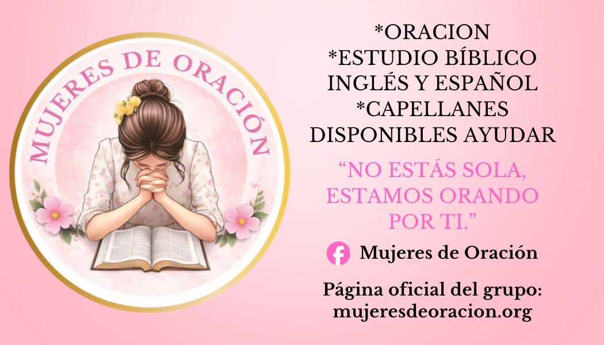
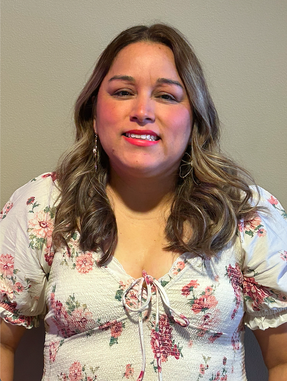
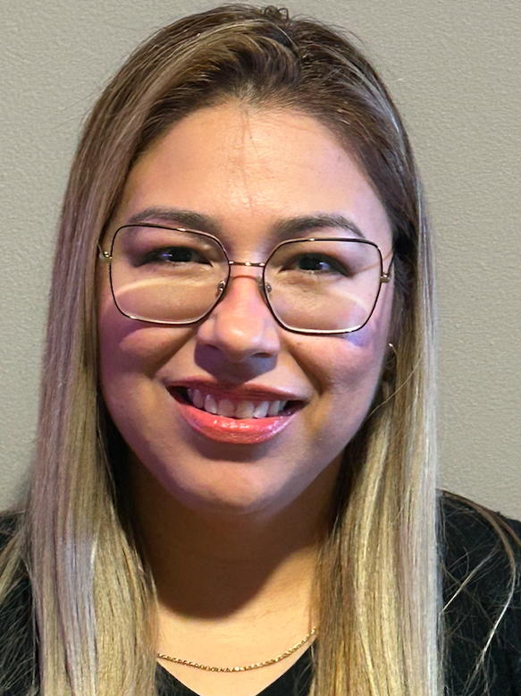
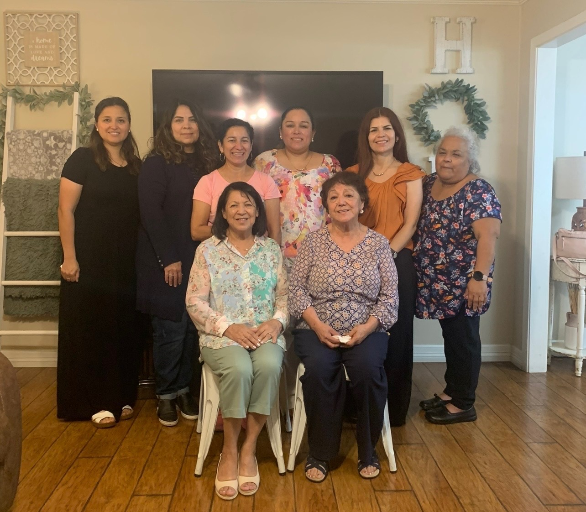
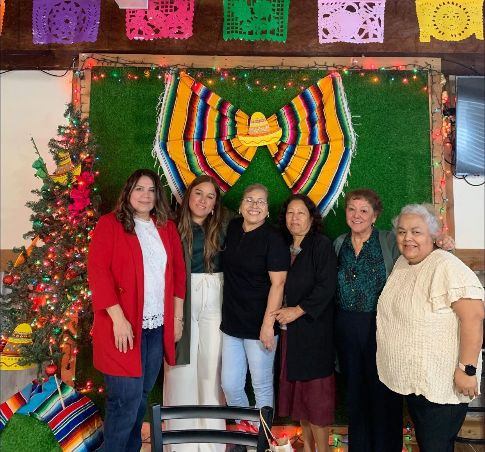
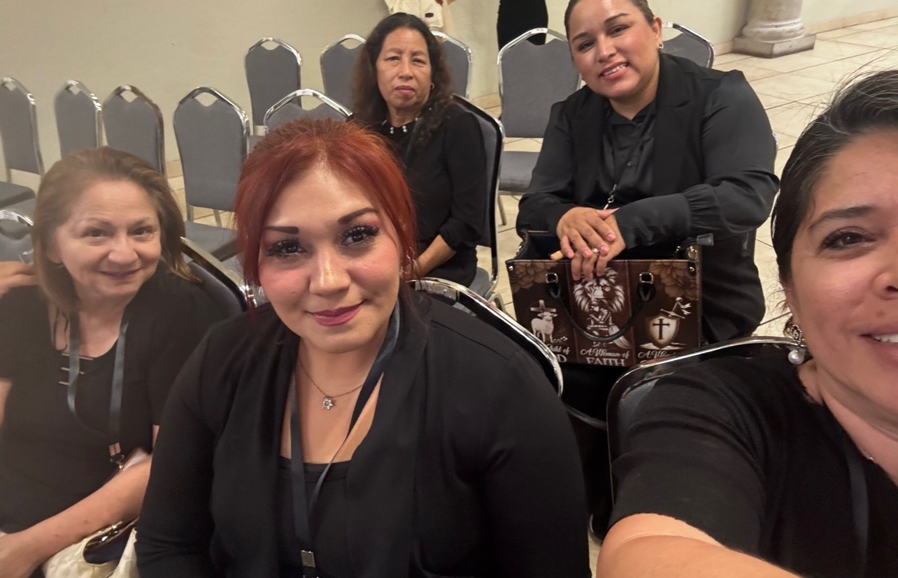
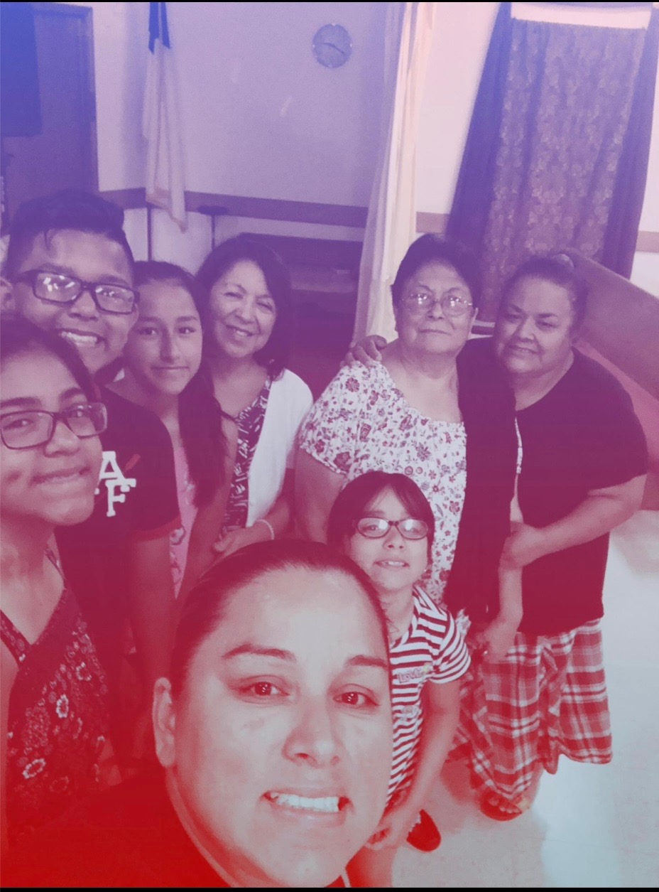
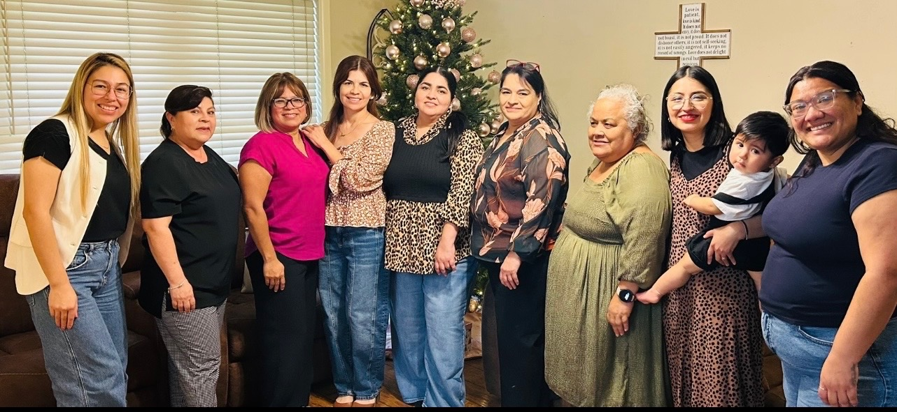

Bienvenida
Hoy nace este espacio creado con amor y fe, un lugar donde mujeres se unen para clamar a Dios, creer en Su poder y descansar en Su presencia 🤍
Aquí encontrarás oración, Palabra de Dios, ánimo para el alma y una comunidad de mujeres que oran contigo. Creemos que Dios escucha cada clamor y que la oración de una mujer llena de fe puede mucho.
*Las peticiones se reciben con respeto y confidencialidad.*
Transmisión en Vivo
Cuando estamos en vivo, podrás ver la transmisión aquí mismo. Si no hay transmisión activa, verás nuestros videos y publicaciones recientes.
Ministerio de Mujeres de Oración
Somos un ministerio comprometido con la intercesión y el acompañamiento espiritual. Nacimos del llamado de Dios a interceder y a permanecer en la brecha por Su pueblo. Somos mujeres consagradas a la oración, sensibles a la voz del Espíritu Santo y comprometidas con llevar la presencia de Dios hasta donde tú estés.
A través de capellanes capacitadas y guiadas por el amor de Cristo, acudimos a hogares, hospitales y momentos de crisis, duelo o decisiones importantes, para orar, escuchar y ministrar sanidad, restauración y esperanza.
Mujeres llamadas a interceder, capellanes ungidas para orar, escuchar y ministrar la presencia de Dios en cada necesidad.
📍 Hogares | Hospitales | Momentos de crisis
🙏 Estamos para orar contigo y por ti.
Actividades Semanales
“Mujeres de Oración y Sabias”
5:00 a.m. (Online)
5:00 a.m. (English)
5:00 a.m. (Online)
Eventos de Marzo
Un mes especial buscando la presencia de Dios en oración, ayuno y comunión espiritual.


*Si deseas participar o enviar una petición, contáctanos por Facebook.*
Maestras del Estudio Bíblico
Mujeres comprometidas con enseñar la Palabra de Dios y edificar la vida espiritual de otras mujeres.


Momentos de Oración y Comunión
Compartimos como hermanas en la fe, unidas en oración y comunión, fortaleciendo nuestros lazos en la presencia de Dios.



Dos momentos especiales que queremos compartir.


Texto Clave
“Oh Jehová, de mañana oirás mi voz; de mañana me presentaré delante de ti, y esperaré.”